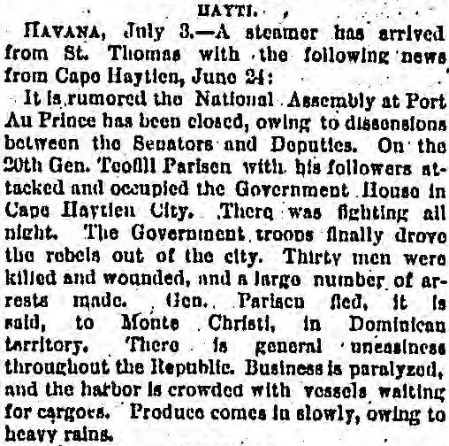
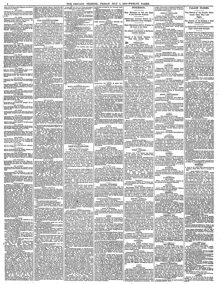

President Suzman Blanco, of Venezuela. proposes that Holland sell the Island of Curacao to VenezuelaEl presidente Guzmán Blanco, de Venezuela, propone que Holanda venda la
Chicago Daily Tribune. Chicago, Ill., July 4, 1879. Page 2. View the originalVer el original


See the full pageVer la página completaUnder the heading San Domingo, the paper reports that the Congress of San Domingo proposes to the United States a free exchange of sugar and tobacco against any two products of the United States. Sugar cultivation in the southern provinces has greatly increased, and this year's crop is estimated at 10,000 hogsheads, against scarcely that many quintals two years ago.Bajo el epígrafe Santo Domingo, el diario informa que el Congreso de Santo Domingo propone a los Estados Unidos el libre intercambio de azúcar y tabaco por dos productos cualesquiera de ese país. El cultivo de azúcar en las provincias del sur ha aumentado mucho, y la cosecha de este año se estima en 10.000 bocoyes, frente a apenas esa cantidad en quintales hace dos años.
FULL TEXT:TEXTO COMPLETO:
HAYTI.HAITÍ.
HAVANA, July 3.--A steamer has arrived from St. Thomas with the following news from Capo Haytien, June 24:LA HABANA, 3 de julio.—Un vapor ha llegado procedente de Santo Tomás con las siguientes noticias de Cabo Haitiano, 24 de junio:
It is rumored the National Assembly at Port Au Prince has been closed, owing to dissensions between the Senators and Deputies. On the 20th Gen. Teofill Parisen with his followers attacked and occupied the Government House in Cape Haytien City. There was fighting all night. The Government troops finally drove the rebels out of the city. Thirty men were killed and wounded, and a large number of arrests made. Gen. Parisen fled, it is said, to Monte Christi, in Dominican territory. There is general uneasiness throughout the Republic. Business is paralyzed, and the harbor is crowded with vessels waiting for cargoes. Produce comes in slowly, owing to heavy rains.Se rumora que la Asamblea Nacional en Puerto Príncipe ha sido cerrada, debido a disensiones entre los Senadores y Diputados. El día 20 el general Teofill Parisen con sus seguidores atacó y ocupó la Casa de Gobierno en la ciudad de Cabo Haitiano. Hubo lucha toda la noche. Las tropas del Gobierno finalmente expulsaron a los rebeldes de la ciudad. Treinta hombres resultaron muertos y heridos, y se hizo un gran número de arrestos. El general Parisen huyó, se dice, a Monte Cristi, en territorio dominicano. Hay una inquietud general en toda la República. Los negocios están paralizados, y el puerto está atestado de buques esperando cargamentos. Los productos llegan lentamente, debido a las fuertes lluvias.